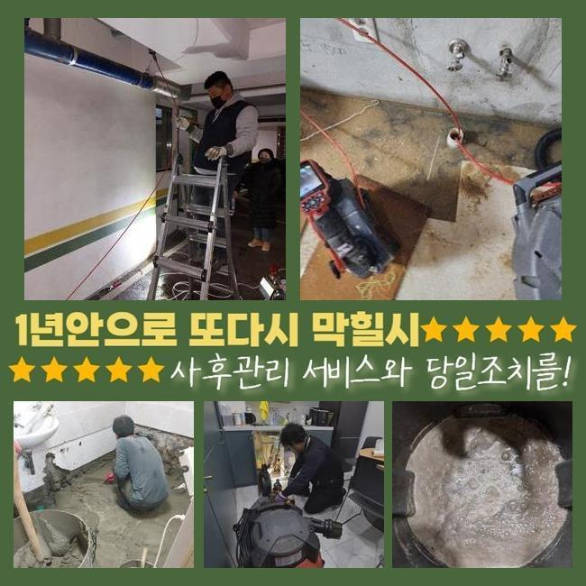
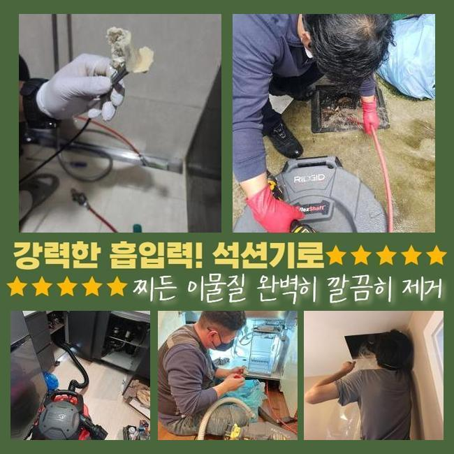
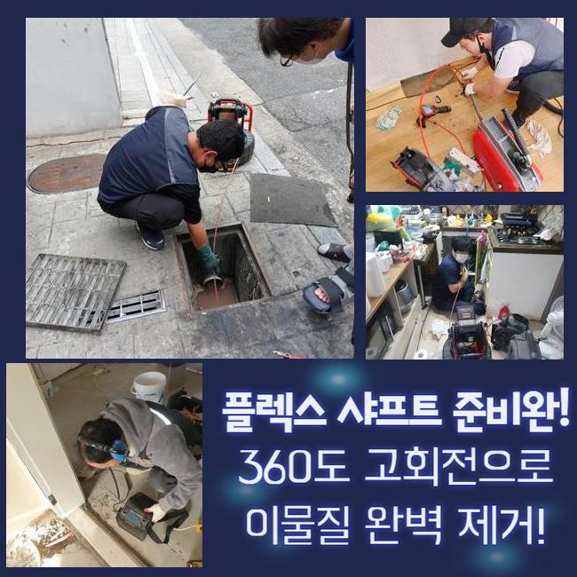
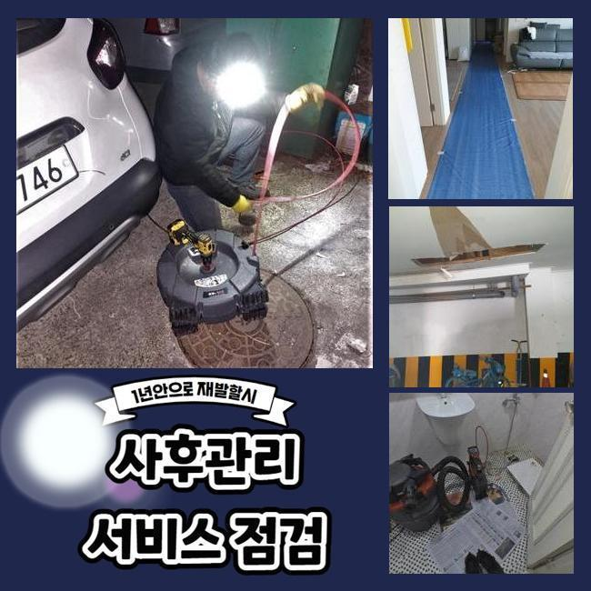
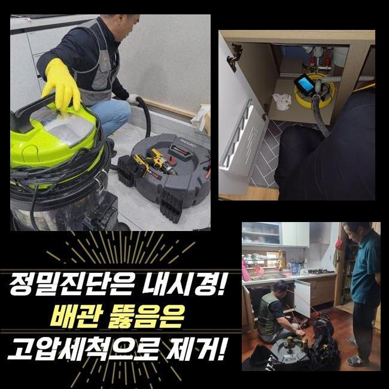
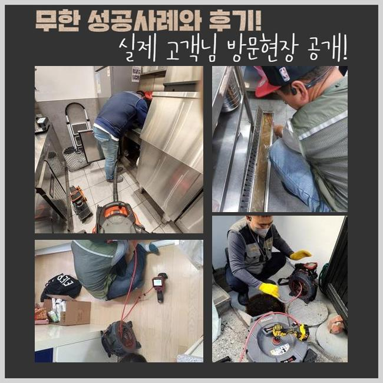
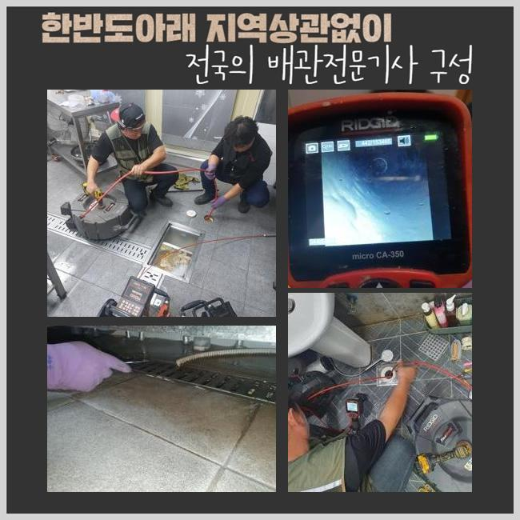

🏠 일산 주엽동하수도뚫음 가좌동 맨홀막힘 배관막힘누수업체
용인시 처인구 배관막힘 전문 시공 후기

📋 작업 개요
- 위치: 용인시 처인구, 수원시 영통구, 화성시 동탄
- 서비스 유형: 배관막힘, 누수수리, 내시경점검
- 작업 일시:
- 업체명: 하수구수사대 (010-5615-2118)
🔍 문제 상황
일산 주엽동하수도뚫음 가좌동 맨홀막힘 배관막힘누수업체
노폐물로 인해서 생겨난 하수구의 중단 현상은 편안한 하루를 살아가는 데 큰 데미지를 입힙니다
물까지 범람하게 된다면 주변부까지 더럽게 될지도 모를 일입니다
이런 난장판을 보완해서 되돌려드리는 게 저희의 업무입니다
그러니 해결하기 어려운 사태에 빠지셨다면 망설임 없이 전화부터 걸어주시면 됩니다
오늘 살펴볼 장소는 하수 흐름의 중단과 역행까지도 동시에 솟구쳐올라서 당황스러운 목소리로 연락주셨어요
예고도 없었다고 말하시겠지만 하수구에 관련한 트러블은 오래토록 누적되어온 문제들이 결국 폭탄처럼 터지게 되는 건데요
크고 작은 입자의 불순물이 관로 벽면에 달라붙다가 더이상 못버티게 되면 아예 불통이 생기는 거예요
어떤 하수구라도 뚫어내는 장치를 두루 가지고 빠르게 고객님을 직접 찾아갔습니다
하수구 관련한 이상 현상들은 일상생활 전체를 전적으로 멈추게 만듭니다
이번 포스팅처럼 욕실과 같이 물을 필수로 반드시 써야하는 장소가 탈이 난다면 더 힘들다고 호소하십니다
하루라도 물을 못 쓴다면 물을 못 써 난감스러운 상황이 일시에 일어나기 때문에 우리를 힘들게 만듭니다
많은 인원들이 여러번 욕실을 써야하기 때문에 편안한 생활을 이어가는데 장애 요소를 만들 수 있어요
이것이 발빠른 조치와 탁월한 해결 방책이 적용되어야 하는 명분인 것입니다

🔎 원인 분석
💡 전문가 진단: 정밀 진단 장비를 사용하여 슬러지의 고착 여부를 판명하고 타격/세척 작업을 실시했습니다.
막힘의 주된 사유를 정확히 분석해봐야 하지만 현장만 둘러 보더라도 대략적으로 예상해 볼 수 있는데요
많은 증거들을 모아보니 석회가 관로에 고여있는 것이 아마도 막힘의 원인인 듯 느껴졌어요.의심스럽다는 생각을 하게 됐습니다
내려간 다량의 하수와 노폐물이 오래 머무른다면 견고한 석회물질이 관로 모양을 따라서 접착력있게 달라붙습니다
배관의 라인을 파악하여 시공 단계들을 정확도 높게 설정하는 게 중요했어요
소소한 양의 석회가 붙어있는 현황이면 석션만으로 얼마든지 삭제가 가능하다고 볼 수 있어요
막대한 수준으로 석회가 쌓였거나 배관의 긴 부분에 완전히 접착된 상태라면 연화시키는 약물을 넣어서 조금 풀어주는 게 좋아요
얼마나 깊은 영역까지 머물러있는지를 파악해야 약품의 이용량도 결정하니 앞서 확인해야 했던 것이죠
청소를 하기 이전에 배관용 카메라를 넣어서 내부 조사 후 정량의 약물을 내려보냈습니다
배관 속이 얼마나 오염됐는지 둘러보았더니 진짜로 고개가 절레절레 저어질 정도로 빼곡하게 노폐물이 차올랐더라고요
석회가 부분적으로만 생긴 수준을 뛰어넘어 포괄적으로 기다란 형태의 경로가 석회에 점유돼서 빈틈도 보이지 않았어요
이 사태 속에 스케일링 작업을 쭉 계속하면 단단히 뭉친 석회로 배관 표면이 데미지를 입습니다
위험을 줄이기 위해 약물을 사용해 이물질을 분해하고 시공을 재개해야 합니다
용액의 양이 부족하면 정확한 용해 작업이 지체되므로 사전에 대비해야하죠
준비를 철저히 꼼꼼하게 이어간다면 다른 어려운 제약 없이 제거가 가능하게 됩니다!

🔧 작업 과정
어떤 형태의 건물이든지 내시경은 일순위이며 없어서는 작업이 안되는 기기 일순위 입니다
시간적 여유를 가지고 석회화가 완전히 풀릴 시기까지 주시하며 기다리며 살폈습니다
마침내 작업을 진행해도 데미지를 입히지 않고 문제 없이 해결할 수 있었습니다
부드러운 재질로 변형되어 떼어내기도 쉽고 작업 난이도도 쉽기 때문입니다
가까운 거리의 부분이라면 신속하게 문제를 해결할 수 있습니다
그러나 배수관은 눈으로는 감지하기 힘든 깊은 구조기때문에 여러 방법을 총동원해 청결 작업을 수행해야 하죠
특히 배관별 구조를 철저히 파악해 놓아야 안전한 방식으로 작업에 돌입할 수 있어요
뭉친 모양이 나아졌다고 판단되었고 역행 증세가 일어나지 않도록 천천히 청소를 계속 이어갔습니다
배관의 막힌 상황을 능동적으로 해소하기 위해 저희 장비인 플렉스 샤프트를 주력으로 사용합니다
이 기기는 헤드에 장착된 사슬이 원으로 돌아가면서 노폐물을 잘게 파쇄하는 역할을 담당하는 파워가 좋은 기계입니다
하지만 노하우 없는 작업이 가동이 되어버린다면 손상될 수 있어 세심한 기술력을 발동해야만 안전합니다
만약 약제를 사용하지 않는다면 깨끗이 내용물을 척결하기 불가능할 수 있어요
의뢰인께서는 배관이 부러지지는 않으려나 불안한 눈빛으로 고민을 하며 바라보시는 듯 했어요
실시하기 이전에 설명을 충분히 해드리고 동의하시면 그에 맞는 작업을 도맡고 있으니 우려하지 않으셔도 돼요
다행히 빠른 시간내에 주입한 약품으로 인해 연약하게 흘러내려 간편하게 제거했습니다
흘러넘친 물로 인해 오염됐던 뚜껑까지 철저하고 깨끗이 정리해 드렸습니다
통수가 원만하게 이루어지는 지를 확인하고 통수 검사 시행을 위해 물을 받아서 배출시켜 보는데요
물을 한껏 받아서 확 부어주었는데 순식간에 자취를 감추는게 눈에 선하게 보이더라고요
이렇게 제대로 막힌 곳을 정화 작업을 거쳐준다면 미래에는 멈추는 구간없이 시원스레 배출이 이루어질 것입니다
청소 과정을 꼼꼼하게 해뒀으므로 단시간 내에 막힐 일이 확실히 없겠지만 재차 석회 물질들이 또 생성되고 말테지요!
하수배관의 경우에는 암만 오염물질이 들어가지 않게 차단하더라도 어쩔 도리 없이 이물이 쌓이는 시설이니 위생관리를 따로 해야합니다
물의 사용빈도가 잦다면 이런 막힘 문제가 자주 생기는 것은 당연한 일입니다
건물의 모든 배관을 주기적으로 정상인지 검사를 하고 문제가 없더라도 청소를 하시는걸 권해드리고 싶네요


✅ 작업 완료
하수 시스템은 이용 고객의 올바른 사용법이 반드시 필요한 시설입니다
막힘이 발생하기 시작하는 시점에 처리한다면 신속하고 간단히 해결할 수 있습니다
간단한 장비로만 힘겹게 미봉책처럼 처리하면 결국엔 참사가 발생할 수 있습니다
배수가 둔해지는 증상이 관찰되거나 그 외의 이슈가 생겼다면 즉시 전화주세요
매우 비정상적인 상황에 부딪혔다 하더라도 저희의 기술과 노하우로 안전하게 다룰 수 있다고 확신을 드리고 싶네요
정규 업무시간을 넘어서라도 스케줄에 맞춰 내방드릴 수 있으니 이상한 징후를 느끼면 연락주시고 향후 포스팅도 주목해 주시면 좋겠습니다




⚠️ 하수구 배관 막힘 예방 및 관리 가이드
- ✅ 머리카락, 비닐, 물티슈 등 물에 분해되지 않는 이물질은 절대 흘려보내지 마세요.
- ✅ 기름기 많은 식기는 설거지 전 키친타올로 먼저 기름때를 닦아내세요.
- ✅ 주기적으로 배수구에 뜨거운 물을 가득 부어주어 유지방 고착을 방지하세요.
- ✅ 작업 후 1년 이내 재발 시 무상 A/S 보증 서비스를 제공합니다.
💡 핵심 정리
- 확실한 장비 작업(내시경 점검 및 샤프트 스케일링)으로 원인을 뿌리 뽑습니다.
- 작업 후 1년 이내에 동일한 부위 재발 시 100% 무상 A/S 서비스를 보장합니다.
- 서울 · 경기 · 인천 전 지역에 24시간 언제든 긴급 출동할 수 있도록 항시 대기 중입니다.
❓ 자주 묻는 질문 (FAQ)
🚨 용인시 처인구 배관막힘 문제로 고민이신가요?
정확한 원인 진단과 확실한 시공으로 재발 없는 해결을 약속드립니다.
24시간 긴급 출동 | 서울 · 경기 · 인천 전지역 | 1년 내 재발 시 무상 A/S